Towards \(\partial\)ifferentiable Engineering Systems.
Optimizing coupled systems with gradients
Kapil Khanal (PhD Candidate)
SEA Lab, Cornell University
Can be coupled or uncoupled
Numerical simulations of subsystems
Transformations on data through mathematical operations
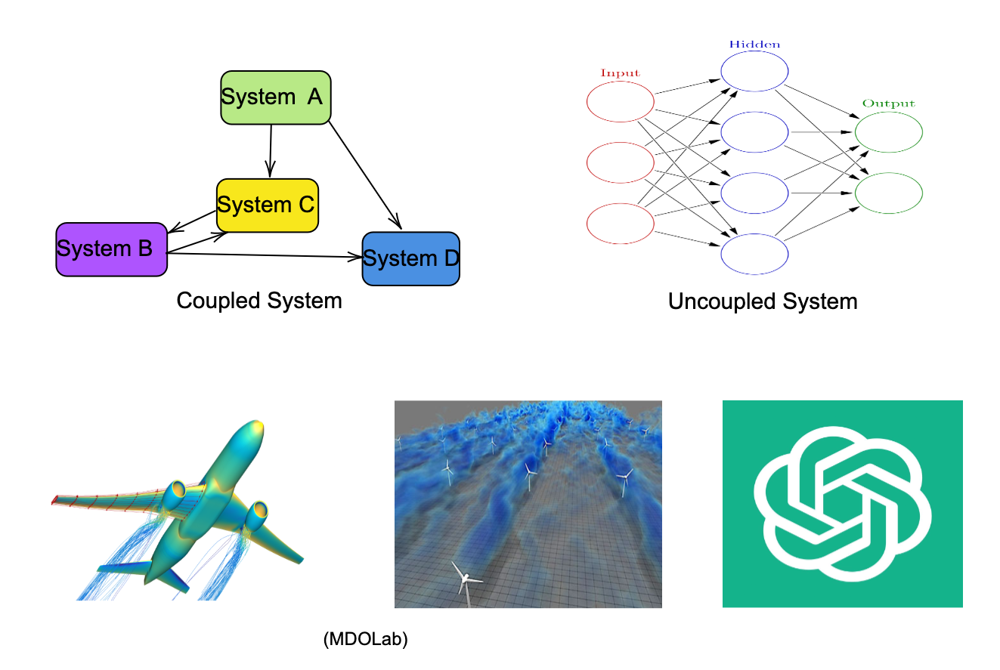
Optimized using backpropagation (adjoint).
Optimization of the entire system for renewable energy system \((\mathcal{S})\)
The system can be formulated as:
\[ \mathcal{S} = \cup \left\{ \mathcal{R}_{1}(\mathcal{X}), \dots, \mathcal{R}_N(\mathcal{X}) \right\} \] and the objective function \((LCOE)\) can be minimized as: \[ \min_{\mathcal{X}} LCOE(\mathcal{X}) \] Subject to the following constraints: \[ \begin{aligned} \text{C}_i \quad & \leq 0, \\ \text{R}_i(\mathcal{X}) \quad & = 0, \quad i = 1, \dots, N \text{ (disciplines)} \\ \text{coupling}: \quad & \mathcal{Y}_i^{t}(\mathcal{X}) = \mathcal{Y}_{j \neq i}^{t}(\mathcal{X}) \quad \text{(consistency)} \end{aligned} \] Where: \[ \mathcal{R} \text{ is the analysis residual of each subsystem.} \] for example, Hydrodynamics, Controls, Economics etc.
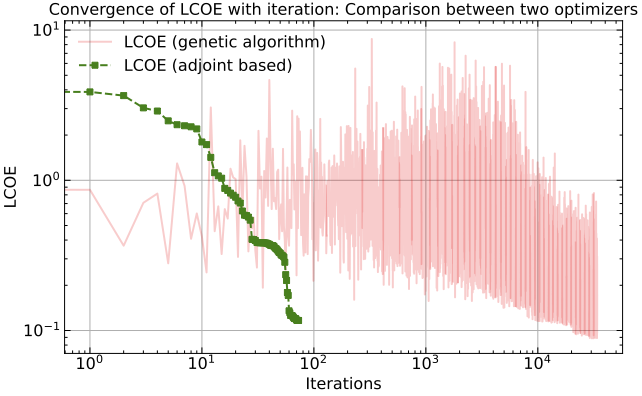
Differentiable physics simulations
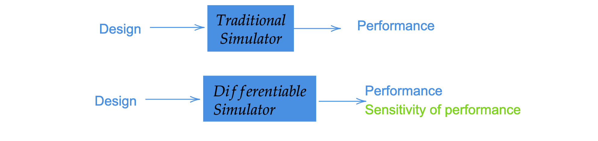
Compute gradients of the physical process (and controls).
MarineHydro.jl.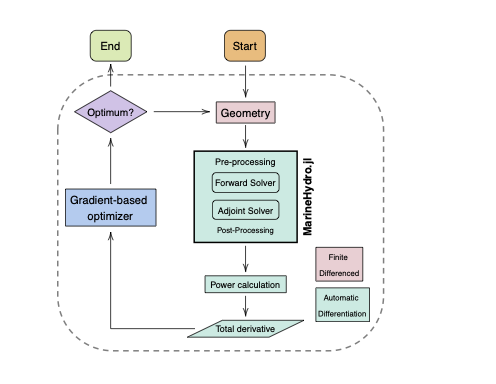
Frequency domain boundary element method (BEM) solver for hydrodynamics.
Supports reverse-mode automatic differentiation (aka backpropagation)
Adjoint method for all linear solve is automated in MarineHydro.jl.
100% Julia implementation.
Open-source and extensible.
Key Benefits:
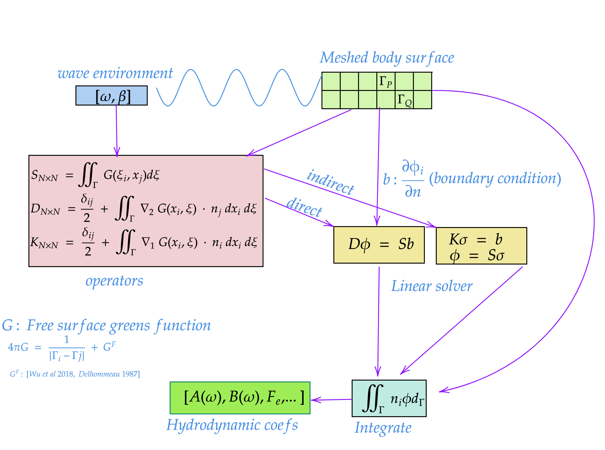
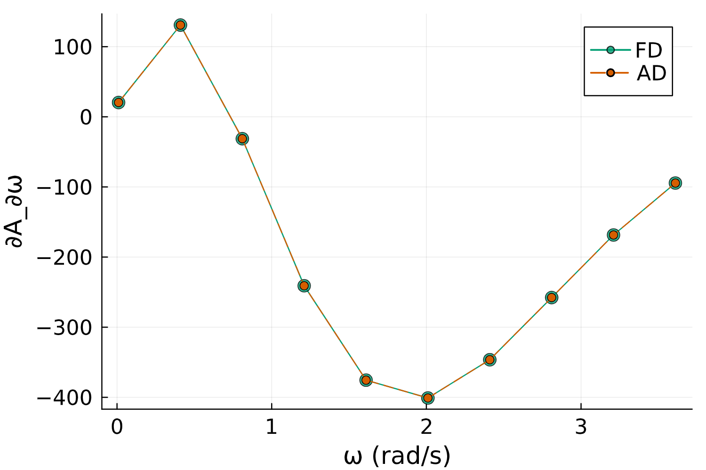
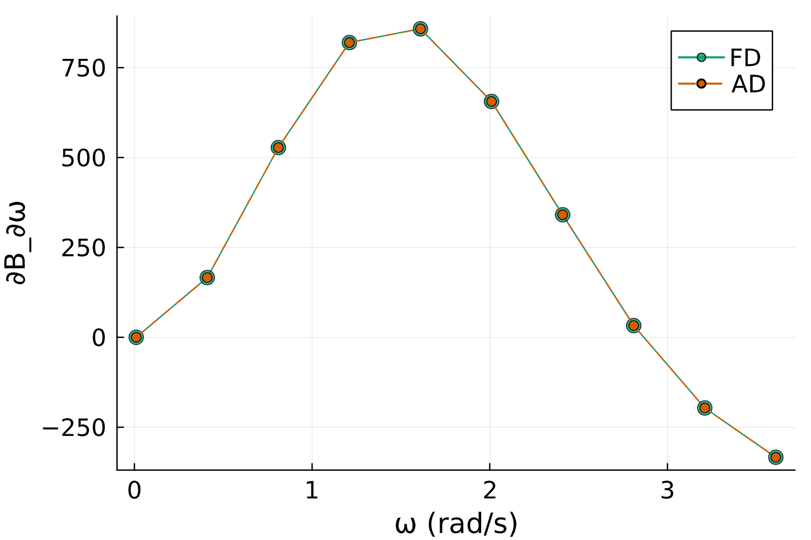
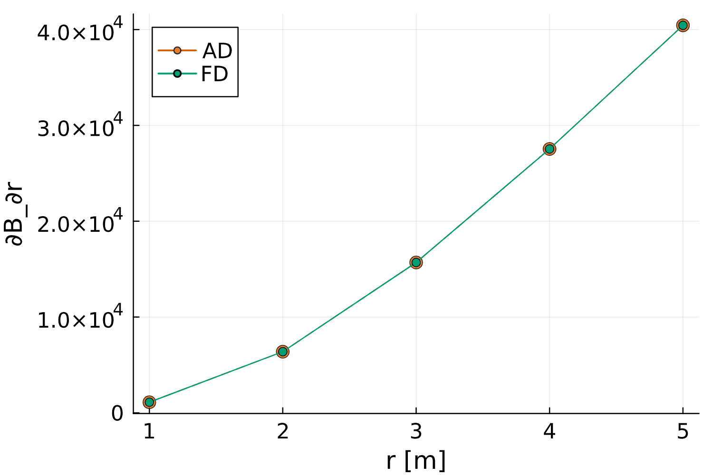
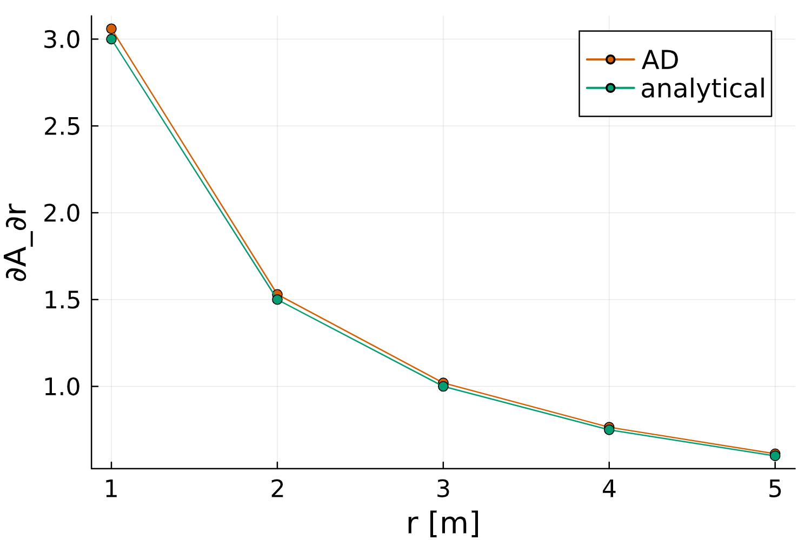
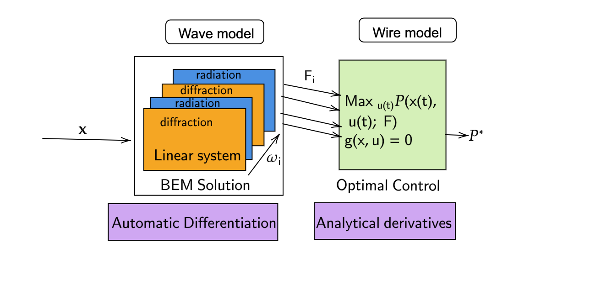
So far I have shown:
Differentiable hydrodynamic analysis using MarineHydro.jl
Differentiable wave to wire model
Differentiable optimization of coupled systems
Next: Differentiable optimization of farm of WECs
Questions?
Thank you for your attention!
Feel free to reach out for any questions or discussions.
Kapil Khanal
Email: kk733@cornell.edu
Constrained optimization
\[ \begin{align} \min_{\theta} \quad & J(\phi(\theta), \theta) \\ \text{subject to} \quad & D(\theta) \phi - S(\theta) b(\theta) = 0 \label{eq_linsys} \end{align} \]
where \(J\) is the cost function, \(D\), \(S\) are BEM matrices, and \(b\) is the boundary condition.
The total derivative of \(J\) with respect to \(\theta\) is: \[ \frac{dJ}{d\theta} = \underbrace{\textcolor{skyblue}{\frac{\partial J}{\partial \theta}}}_{\textcolor{skyblue}{\text{Direct}}} + \underbrace{\textcolor{orange}{\left( \frac{\partial J}{\partial \phi} \right)^T \frac{\partial \phi}{\partial \theta}}}_{\textcolor{orange}{\text{Indirect}}} \]
To compute \(\textcolor{orange}{\frac{\partial \phi}{\partial \theta}}\), the linear system should be perturbed: \[\begin{align} \frac{\partial (D\phi)}{\partial \theta} &= \frac{\partial (Sb)}{\partial \theta} \\ \end{align}\]
Avoid Perturbing Linear System Many Times
Perturb the linear system:
\[ \frac{\partial D}{\partial \theta} \phi + D \frac{\partial \phi}{\partial \theta} = \frac{\partial S}{\partial \theta} b + S \frac{\partial b}{\partial \theta} \]
\[ D \frac{\partial \phi}{\partial \theta} = S \frac{\partial b}{\partial \theta} + b \frac{\partial S}{\partial \theta} - \phi \frac{\partial D}{\partial \theta} \]
\[ \frac{\partial \phi}{\partial \theta} = D^{-1} \left( S \frac{\partial b}{\partial \theta} + b \frac{\partial S}{\partial \theta} - \phi \frac{\partial D}{\partial \theta} \right) \]
Substituting \(\frac{\partial \phi}{\partial \theta}\) and grouping terms from left to right \[ \begin{align} \lambda^T &= \frac{\partial J}{\partial \phi} D^{-1}\\ \lambda^T D &= \frac{\partial J}{\partial \phi} \end{align} \]
The gradient of \(J\) with respect to \(\theta\) is then expressed as: \[ \begin{equation} \frac{\partial J}{\partial \theta} = \frac{\partial J}{\partial \theta} + \lambda^T \left( \frac{\partial b}{\partial\theta}S + b\frac{\partial S}{\partial\theta} - \phi\frac{\partial D}{\partial\theta} \right) \label{eq:grad_theta} \end{equation} \]
All individual partials are computed using Automatic Differentiation.
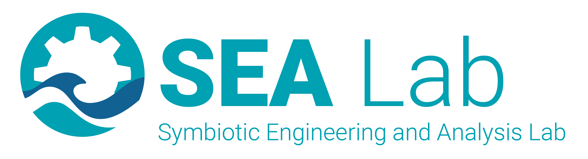